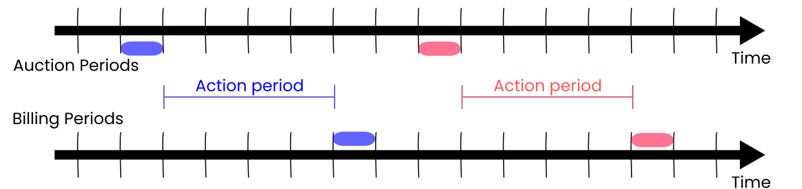

I co-founded Powerweave with Mathilde Mounier. We have been working nights and weekends for the better part of a year. Today, I can reveal it publicly.
Starting a business is something that I have been thinking about since finishing graduate school. My academic expertise could not be turned into a business outright (although ex-colleagues are trying!), but my skills in mathematics, software engineering, and computer science have a broader applicability.
Mathilde and I want to act on the climate emergency. As simple citizens, our actions have a limited effect. However, by starting the right business, we can create a movement which has a tangible impact. I am positively inclined towards technology startups specifically because of the growth curve. This means that if everything goes right, Powerweave could change the world.
For many reasons, including the push towards sustainable energy and the increasing demand for energy due to a resurgence of artificial intelligence progress, power grid infrastructure is under tremendous stress, and technologies are evolving rapidly to address this. The space is fertile ground for innovators that seek to help the world in a concrete way. In order to get both startup and industry experience, I joined SocïVolta, a technology startup that operates at the intersection of financial markets and the North American power grid. This is also where I met Mathilde. We both gained invaluable insights into how the North American power infrastructure works – and where its weaknesses are.
In this post, I will describe current power infrastructure, how Powerweave helps, and what’s next for us.
What is the North American power grid?
The power grid is an electrical network which can be categorized into three broad levels:
- Generation: power stations, which are often far from population centers;
- Transmission: long-distance electrical transmission lines connecting power stations to population centers;
- Distribution: network of low-voltage transmission to homes and businesses.
There are places in North America where all three levels are controlled by a single entity (e.g. Hydro-Québec). But increasingly, different entities own and operate different levels of the power grid.
What is the provenance of the electricity that powers your screen right now? It might not be from the closest power station. The provenance of your electricity depends on lots of factors, including who else wants electricity right now, and who is currently generating electricity. Sometimes, it is better to use a power source far from you, but that takes a path which is relatively unused.
Most people want cheap electricity. Getting you the cheapest power every second of the year requires coordination between all operating entities on the power grid. The modern way to coordinate the behavior of the power grid at all levels are so-called wholesale electricity markets. At wholesale electricity markets, power station owners, transmission line owners, and energy service providers come together to enter auctions to determine the geographical price of electricity. While the details of such auctions are far beyond the scope of this blog post, the important bit is that power auctions answer the following two questions:
- Where does the energy produced by a power station get consumed?
- What is the cost of this energy at every node in the power grid?
Wholesale electricity markets have been shown to increase competition and lower electricity rates, as well as integrate renewable energy resources more effectively. That is why you see them popping up more and more across the world. The European Union even codified it into law in 2019.
Local electricity distribution
Let’s zoom in on the last level, where Powerweave operates: local electricity distribution.
It used to be that local distribution of electricity was squarely in one direction: homes and businesses would only consume electricity. With the advent of rooftop solar panels and home batteries, this is no longer true. Homes and businesses can act as spontaneous, small power stations called distributed energy resources.
On one hand, we should encourage individuals and businesses to produce their own energy and even export it back to the grid at certain times. Electricity consumption per capita is increasing rapidly, which is stressing power infrastructure. Individuals and businesses that produce and consume energy, prosumers, invest in power infrastructure so that the utilities don’t have to – a concept known as virtual infrastructure upgrades. The alternative is that energy service providers (e.g. utilities) invest in infrastructure, in which case all rate-payers split the bill.
On the other hand, energy service providers are either not ready, or unwilling, to absorb spontaneous extra energy from prosumers. From an electricity distributor point-of-view, it would be much better for electricity to be consumed close to where it is generated (community self-consumption).
At the local distribution level, what is now needed is coordination between all rate-payers in a community. Does this problem remind you of something?
So what is Powerweave?
Powerweave operates a platform that coordinates all rate-payers in a community. It solves the problem of incentivizing rate-payers to invest in power infrastructure and to be more energy efficient when the power grid needs it the most, while also ensuring community self-consumption.
The Powerweave platform is centered around local power auctions, or local electricity markets. For each community, auctions are conducted at regular intervals (usually 5 minutes). Just like wholesale power markets, each auction covers a period of electricity consumption/generation in the near future:

The time between an auction ending, and its corresponding billing period starting, is the action period. This is a period during which rate-payers know how much power will cost, but they still have influence over how much power they consume or generate.
I cannot stress enough how the existence of the action period is key to Powerweave. Consider this example.
I am charging my electric car, which will require quite a bit of power (10kW) over the next 8 hours. I participate in the next power auction, where I bid for 10kW of power. However, when closing the auction, I am only cleared to draw 4kW of solar power from a few neighbors at a reasonable price; the shortfall (6kW) will be covered by my utility at a higher price, since the grid is under stress right now. Knowing this in advance, I can slow down or pause charging my vehicle until I can get a better overall energy price.
This example is the foundation of Powerweave. As a rate-payer, I minimized my electricity bill and used clean sustainable power. My utility incentivized me to be more energy efficient when it mattered, and it also saved on infrastructure costs. Win-win!
However, as you can imagine, constantly participating in auctions and adjusting power consumption/generation (day and night!) is unrealistic for most people. Therefore, Powerweave automates all of this.
On the auction side, Powerweave can trade on behalf of rate-payers. Using statistical and machine-learning models trained on historical consumption and generation data, as well as external data such as weather forecasts, Powerweave can place bids and offers for power to achieve goals set by each rate-payer, such as minimizing energy costs, or minimizing carbon emissions. These models are tireless and self-adjusting; you never need to participate in auctions directly if you don’t want to.
On the pricing response side, Powerweave integrates with third-parties (e.g. smartphone notifications, electric vehicle charging systems, smart thermostats) to automatically adjust your load or generation profile.
Our technology is unique in North America (although related technologies have been trialed in the past). Powerweave can legally operate in about 10 US states (including New York and California), with more states potentially opening up soon. Powerweave probably could not have operated even just 5 years ago. We exist at the edge of regulations; this is a great opportunity to influence US-wide reforms on local energy coordination.
The near future
Mathilde and I have completed an early technology demonstration, to show that Powerweave’s offering can indeed be realized. We are using a lot of cool technology, which I hope to share with you soon!
Right now, we are focused on partnering with one energy service provider (utility, community choice aggregation, or independent microgrid) to run a pilot project. This will demonstrate that our technology is beneficial, and give confidence to less-technologically-inclined energy service providers (which are most of them) that Powerweave can help them.
If you can help us connect with decision makers at energy service providers, I would love to hear from you. Getting the first contact with potential partners is difficult; being introduced by someone else helps tremendously.
We hope to grow the team soon as well. If you are interested in Powerweave’s mission, be sure to follow us on LinkedIn!